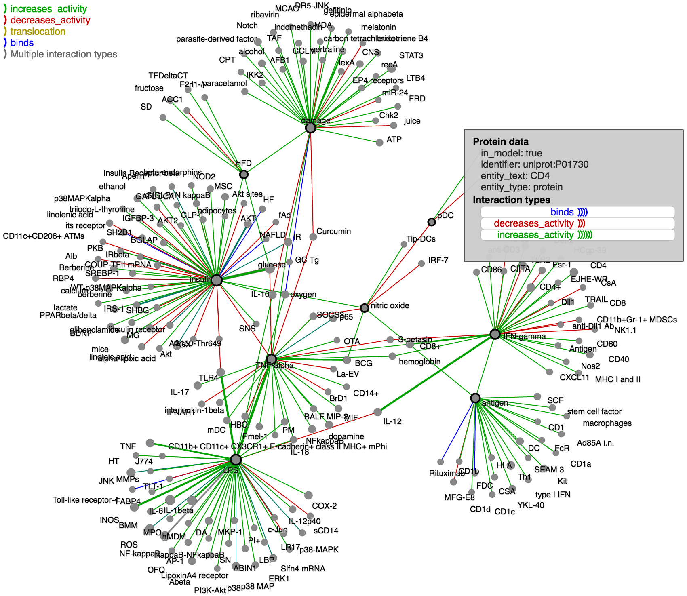

BioLinker: Bottom-up Exploration of Protein Interaction Networks
| Tommy Dang Texas Tech University |
Paul Murray University of Illinois at Chicago |
Angus Forbes University of Illinois at Chicago |
- PubMed Central (PMC) is a free archive of biomedical and life sciences journal.
- We currently store over 290,000 PMC publications on our server.
- https://github.com/clulab/reach/wiki/Datasets
An index card is a JSON object:
- participants
- interaction type (binds, adds_modification, removes_modification, translocates).
- context (species, cell type, organism, tissue type)
- pmcid
- evidence
- CbioPortal contains 150 cancer genomics studies
- more than 17,000 tumor samples


Questions?
Email: Tommy.Dang@ttu.edu
This work was supported by NSF/DHS grant DMS-FODAVA-0808860 and DARPA Big Mechanism Program under ARO contract WF911NF-14-1-0395